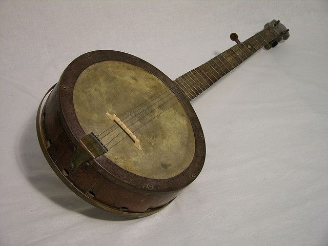
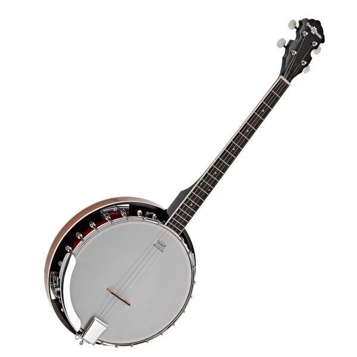

BANJO
A stringed musical instrument of African origin, popularized in the United States by slaves in the 19th century, then exported to Europe. The materials used to create a banjo were simple: a hollowed-out gourd, a wooden neck, an animal skin to cover the gourd, and strings made from horse hair, animal gut, or another similar material. Early banjos had no frets, three or four heavy strings, and a deeper, mellower sound than modern banjos. In the 1890s, frets were added to the long neck, and a machine head with screws replaced the tuning pegs.
The earliest banjos had four gut strings; later, from five to nine metal strings were used. The standard banjo has five metal strings. Four are tuned from the head, usually to C′–G′–B′–D″ upward from (notated) middle C. Preceding the C string is the chanterelle (drone, or thumb), a shorter string fastened to a screw midway in the banjo neck. It is tuned to the (notated) second G above middle C. The actual pitch is an octave lower than notated.
The modern banjo has two main sections, the neck and the pot assembly. The neck begins with the head stock or peghead, a piece of wood whose primary purpose is to hold the tuners and provide a base for the strings. The other main component of the banjo, the pot assembly, resembles a drum and provides the banjo’s extraordinary sound projection. The primary structural component of the pot assembly is the rim, a round piece of wood that provides a base for the other parts. Inside the banjo is a tone ring, which can be made from either metal or wood. The material used affects the tone quality of the instrument.